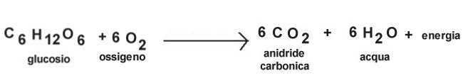

|
|
Home |
Le piante, come tutti gli esseri viventi aerobici, respirano: consumano ossigeno e producono anidride carbonica. Di notte poi, mancando la luce, non fanno più la fotosintesi clorofilliana che produce ossigeno in quantità maggiore all’Anidride Carbonica generata dalla respirazione.
Quindi la respirazione delle piante è sostanzialmente la funzione inversa della fotosintesi clorofilliana, quando la pianta consuma anidrite carbonica e genera ossigeno come “scarto” del processo, in quanto, nella respirazione , c’è il consumo di ossigeno e produzione di anidride carbonica.
La respirazione è una reazione chimica grazie alla quale le sostanze nutritive generate dalla Fotosintesi vengono trasformate in energia per la pianta.
In realtà, in tutti gli esseri viventi aerobici c’è la respirazione cellulare che è il processo chimico di generazione di energia attraverso una reazione chimica tra il glucosio e l’ossigeno durante la quale le molecole di glucosio vengono frammentate per dare alla cellula e poi all’intero organismo l’energia necessaria a sopravvivere, crescere, nutrirsi, riprodursi e svolgere tutte le funzioni vitali. Al contempo, tale reazione genera anche anidride Carbonica e acqua.
Gran parte dell’ energia generata viene immagazzinata nelle molecole ATP (adenosintrifosfato) mentre una parte diventa calore che viene rilasciata nell’aria come scarto del processo.
Anche l’anidride carbonica e l’acqua, generata dall’unione dell’idrogeno e dell’ossigeno liberati dalla reazione, vengono espulsi nell’aria attraverso l’espirazione come scarti del processo.
La respirazione cellulare avviene nei mitocondri, organuli presenti all’interno di ogni cellula, che possono essere definiti le “centrali energetiche della cellula”.
La respirazione cellulare quindi avviene in tutte le cellule della pianta perché tutte hanno bisogno di energia per sopravvivere e svolgere la loro funzione.
Nelle piante non esiste un organo respiratorio specifico e l’ossigeno entra soprattutto attraverso le foglie dalle quali viene poi trasportato in altre cellule della piante; ma in realtà l’ossigeno penetra anche attraverso il fusto e le radici, per questo motivo non bisogna mai coprire il fusto o le radici di una pianta perché privati della possibilità di procurarsi l’ossigeno rischierebbero di soffocare e far morire l’intera pianta.
Nelle foglie la respirazione avviene attraverso gli Stomi, piccole aperture presenti sulla parte inferiore delle foglie che consentono lo scambio gassoso tra la pianta e l'ambiente esterno.
Nelle altre parti della pianta invece gli scambi gassosi avvengono attraverso le lenticelle.
Le piante acquatiche poi, prelevano l’ossigeno direttamente dall’acqua.
Nelle piante più giovani si osserva una respirazione più intensa perché hanno bisogno di più ossigeno per generare l’energia necessaria a crescere e svilupparsi; mentre nelle piante adulte diventa meno intensa.
Quindi, affinché le piante possano vivere e svilupparsi correttamente bisogna garantire loro anche la giusta quantità di ossigeno oltre che di nutrimento e acqua.